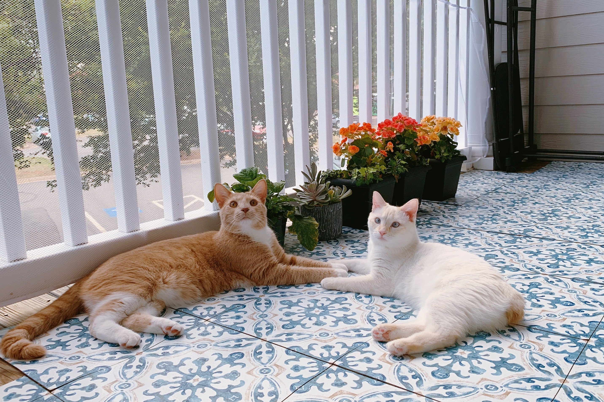
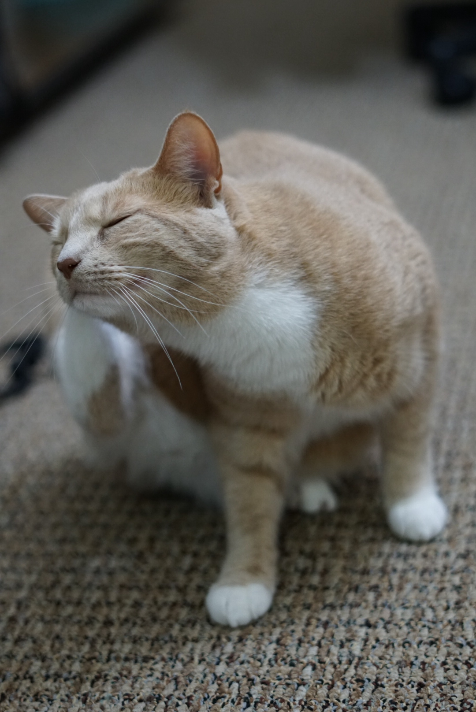

More about me
- My name in Chinese is 陈涵洁. I grew up in Jingdezhen, known as the Porcelain Capital of China.
- I started playing the piano at the age of three, but not professionally. Now it provides me with a means to escape from work.
- For exercise, I love swimming, yoga, hiking...
- I enjoy traveling with my family and friends whenever I'm free
Travel brings power and love back into your life. - Rumi
Volunteers
- Volunteer for WiML @ NeurIPS, New Orleans, US, 2022
- Volunteer mentor in the CSGSC Mentorship Program, UVA, US, 2021
- Volunteer for the USTC Summer Camp, Hefei, China, Summer 2016, 2015
- Volunteer for the Asian Youth Games, Nanjing, China, Summer 2013
- Volunteer teaching in a mountain village, Guizhou, China, Summer 2012
My cats
This is Summer. I adopted him when he was 10 weeks old. He is clever, curious, and incredibly loyal.

This cutie is Shirley. She was a 9-week kitten when I first met her, looking like a tiny snowball. She is adorable, energetic, and plays very well with Summer.

Cuteness loading...

